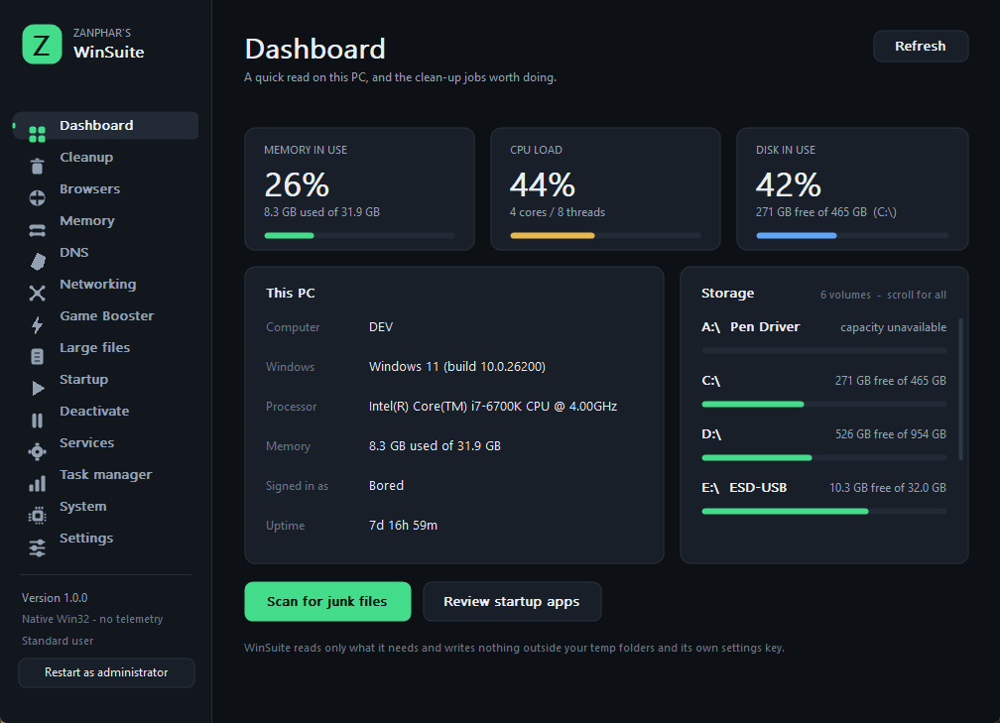
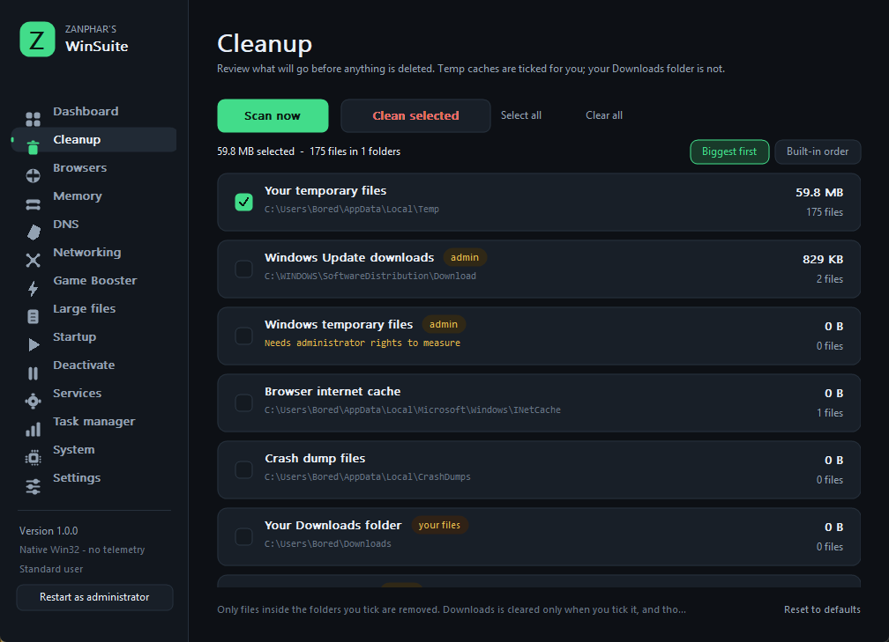
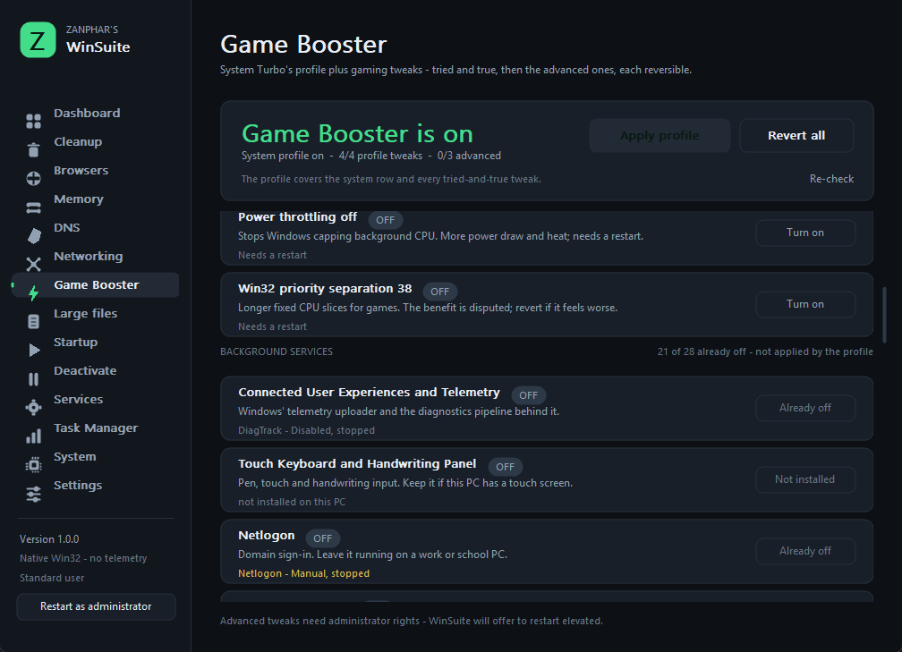

Cleanup that asks first
Temporary files, Windows Update, prefetch and crash caches measured on open. Downloads stays unticked, personal targets name their file count, and whatever you clear goes to the Recycle Bin.
rescan · cancel · remembered ticksVersion 2.1.0 · Windows 10 & 11 · x64
Cleanup, storage, DNS, gaming latency, services, tasks, memory and startup control — rebuilt from scratch in plain C++ and Win32. Under three megabytes, no installer, no runtime, no telemetry, and every change journaled so Revert puts it back exactly.

Fifteen pages in one visual language, one elevation prompt and one settings file. Nothing has to be started separately, and nothing is left running when the window closes.
Temporary files, Windows Update, prefetch and crash caches measured on open. Downloads stays unticked, personal targets name their file count, and whatever you clear goes to the Recycle Bin.
rescan · cancel · remembered ticksNagle off on every adapter, throttling and responsiveness off, the Games task profile on. The latency card pings a host you choose, and applying the profile takes the baseline and the after-reading by itself.
before / after · ms and packet lossAll 310 installed services with their start type and state, four start types as chips, Start and Stop on every ticked row at once, and New, Edit and Delete for your own entries.
bulk ticks · search · Windows components protectedEvery process with its pid, affinity and priority. End a task politely or force it, start a new one, and save affinity and priority rules that follow the program into every future run.
per-core affinity · rules kept across bootsEvery adapter, every resolver, one provider applied to all of them — and a watchdog that rewrites the servers 1.5 seconds after anything changes them.
Google · Cloudflare · OpenDNS · Quad9Live memory figures, regular and deep cleans, Smart RAM's automatic threshold, plus System Turbo's profile as the first row of Game Booster — no copying values from somewhere else.
65–95% thresholds · idle clean · revertThese are captures of the shipped build, not mockups — the same layout at 1024 × 768 of design space, scaled with the display.




There is no installer, no service and no first-run wizard. Unzip it, run it, close it.
One archive, eleven executables and three documents. Put the folder anywhere you like; there is nothing to register and nothing to uninstall later.
The main window runs as a standard user. Pages that change the machine ask once and restart elevated, rather than running at reduced rights behind your back.
Values are read and saved with their type before they change. Revert restores exactly what was there; a value another tool set is shown but never claimed.
Roughly 8,000 lines of C++ across the suite and its four engines, compiled statically so each executable depends only on DLLs Windows itself provides.
GDI+ drawing, Win32 messages, DPI-aware layout. No Electron, no WebView, no runtime, no auto-updater, no background helper unless you save a task rule.
No analytics, no crash reporting, no licence check. The only network traffic the suite makes is the latency check you press and the DNS resolver you choose.
Registry values are journaled with their type and original data. Revert puts them back, and a restart re-reads them the way Windows intends.
The full source builds with MinGW-w64 and one batch file. BSD 3-Clause, © 2026-2027 Charles McDonald — the same agreement the Settings page shows read-only.
Version 2.1.0 · Windows 10/11 x64 · no installer · checksums published with every build.